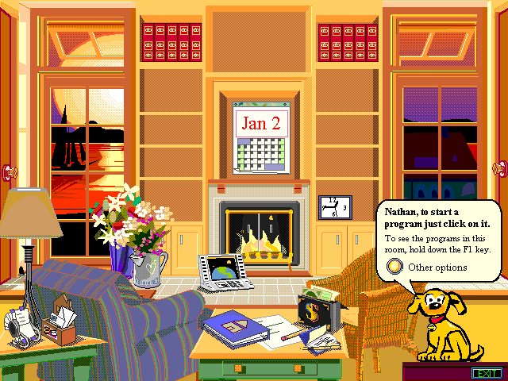
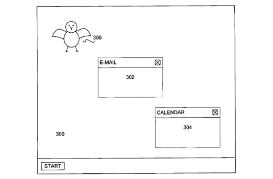
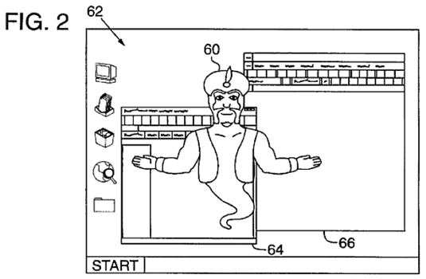
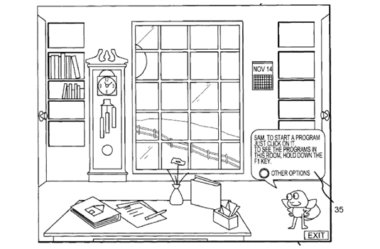
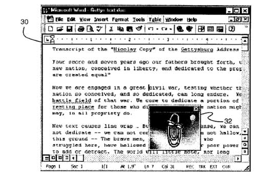
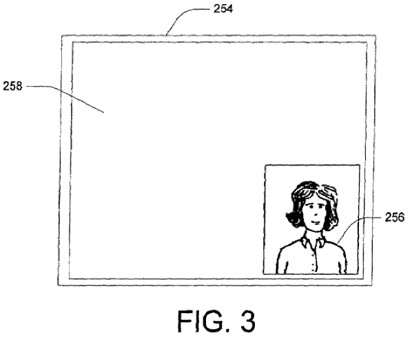
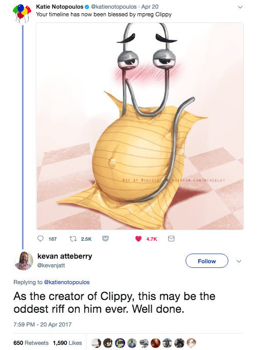

The Man, The Clip, The Legend
Microsoft Office Assistant, formally named as "Clipit," but known as "Clippy" in popular culture, is one of the most well-known and most polarizing examples of an embodied conversational interface agent.
" Embodied conversational agents are embodied agents (usually with a graphical front-end as opposed to a robotic body) that are capable of engaging in conversation with one another and with humans employing the same verbal and nonverbal means that humans do (such as gesture, facial expression, and so forth)."
Exploring the history and legacy of Clippy may help us to figure out how to design anthropomorphic user interfaces that are helpful and aren't annoying, to find out what went wrong with the most hated paperclip in history, and if we are doomed to repeat our mistakes when we try to create helpful and entertaining conversational agents.
Computers Are Social Actors (CASA) theory and Microsoft Bob
Microsoft's first conversational agent was Rover, a dog who sat in the corner of the screen of the Microsoft Bob interface, part of the 'Microsoft Home' software line. The Microsoft Bob interface was inspired by Packard Bell Navigator and was set up as an image of a cozy office.

Image via Toasty Tech
Similar cartoon helpers have been included in multiple patents by Microsoft through the years 1994 - 2002, and you can see from the timeline below how they planned to use the conversational agents to perform a variety of functions (and there's Clippy himself, in "Method for Managing Simultaneous Display of Multiple Windows in a Graphical User Interface":
-
Software Platform Having a Real World Interface With Animated Characters - Filed July 8th, 1994

-
Use of Avatars With Automated Gesturing and Bounded Interaction in an On-Line Chat Session - Filed December 14th, 1995

-
Intelligent User Assistance Facility - Filed July 19th, 1996

-
Modulating the Behavior of an Animated Character to Reflect Beliefs Inferred About a User’s Desire for Automated Services - Filed May 17th, 1997
-
Client Server Animation System for Managing Interactive User Interface Characters - Filed May 19th, 1997
-
Software Platform Having a Real World Interface With Animated Characters - Filed June 19th, 1997
-
Method for Managing Simultaneous Display of Multiple Windows in a Graphical User Interface - Filed July 15th, 1997
-
Intelligent User Assistance Facility - Filed November 20, 1998

-
System for Improving Search Text - Filed December 23rd, 1998

-
Conversational Interface Agent - Filed March 14th, 2002
All of these agents are designed to exploit the "Computers As Social Actors" (CASA) theory outlined by Clifford Nass and others in human-computer interaction studies dating back to 1993.
G4TV: “Why People Yell at Their Computer Monitors and Hate Microsoft's Clippy”
" The work of Nass and Reeves proved that when people talk to computers, when they hit the keyboard and move the mouse, the part of their brain that’s being activated is the part that has that emotional reaction to people dealing with people."
Studies have found that people subconsciously (even after exhibiting this behavior, they may deny it) use the same standards of politeness, gender stereotypes, teamwork, and reciprocity in their interactions with computers as they do with people. There are several theories about the phenomenology of human-computer interaction that have attempted to figure out why.

Characters like Clippy and the other conversational agents included in Microsoft Office 1997 exploit this subconscious phenomenon by making it an explicit part of the software design... but Clippy did it so, so wrong.
Functions and Design Process
Clippy is able to help guide the user through using Microsoft Office in two ways: Natural Language Queries and the Proactive Help System. A Natural Language Query is when you type a question into his help box. He will provide the same answers as the Answer Wizard.
The Proactive Help System is what he was famous for: the program guesses from the user's actions if they are struggling to complete a task and a lightbulb appears over Clippy's head before he offers help. The letter-writing tip became Clippy's signature.

Image via Wikipedia
When not offering help, Clippy's idle animations include blinking, sleeping, or "helping" with various tasks (even though the agent actually has nothing to do with them) like saving the document.
There was a "joke" circulated at Microsoft uncovered by James Fallows' investigation about the development and eventual decommissioning of Clippy, which he describes as "organizational anthropology" but is at best a misogynist rumor:
" For a while the head of the Bob project was one Melinda French, who by the time I was on campus had become Melinda French Gates, first lady of the corporation...I don't want to overstate this -- the fact that Clippy had been the brainchild of the boss's wife was mentioned as a little joke, not a seriously decisive factor. But it was a joke everybody knew."
All other histories of Clippy's design process point to a lack of women involved in the design process as one of its major failures. In the documentary Code: Debugging the gender gap, former Microsoft executive Roz Ho is quoted saying she was in the room during the design process and that early focus groups hated Clippy:
" We did a bunch of focus-group testing, and the results came back kind of negative. Most of the women thought the characters were too male and that they were leering at them. So we're sitting in a conference room. There's me and I think, like, eleven or twelve guys, and we're going through the results, and they said, 'I don't see it. I just don't know what they’re talking about.' And I said, 'Guys, guys, look, I'm a woman, and I'm going to tell you, these animated characters are male-looking.'"
There is one man who takes the blame for Clippy's design: illustrator Kevan Atteberry.
Image via Twitter
In an interview with Motherboard, he described the design process and confirmed that the characters were descended from Microsoft Bob, but he has a very different perspective on the focus groups' opinions:
" I originally worked on a project called Microsoft Bob, which was probably their biggest failure ever. When Bob crashed, we took the character help over to Word. We designed about 250 characters, and I had about 15 or 20 of 'em in there. Through working with some social psychologists out of Stanford, we spent six months going through them all, whittling them down with focus groups and stuff like that, and [Clippy] came out to be the number one most trustful and engaging and endearing character of them all. So he became the default."
The commonly held belief now is that Clippy was chosen as the default because his character was the only office supply.
A Polarizing Figure
" If that motherf****ing PAPERCLIP FROM HELL pops up one more time I'M gonna throw this computer out the window...
Why The F*** did Billy decide to torment us with that? Did he design it so that all the F***ING 6-year-olds that actually needed help could get it? Or does he just love to torment us? I greatly WISH one of the selections was "GO TO HELL YOU MOTHERF***ING PIECE OF S***!", but sadly there is none.
Usually, I have that MOTHERF***ER disabled through the settings, but I am using a friend's computer right now. Still though, even if you think you have the PAPERCLIP FROM HELL completly disabled, it STILL finds some way to pop up when you least expect it, to torment you some more.
In conclusion....Billy-Bob Gates, WTF were you thinking????????"
The Straight Dope, April 2003
Why The F*** did Billy decide to torment us with that? Did he design it so that all the F***ING 6-year-olds that actually needed help could get it? Or does he just love to torment us? I greatly WISH one of the selections was "GO TO HELL YOU MOTHERF***ING PIECE OF S***!", but sadly there is none.
Usually, I have that MOTHERF***ER disabled through the settings, but I am using a friend's computer right now. Still though, even if you think you have the PAPERCLIP FROM HELL completly disabled, it STILL finds some way to pop up when you least expect it, to torment you some more.
In conclusion....Billy-Bob Gates, WTF were you thinking????????"
TIME magazine deemed Clippy one of the 50 Worst Inventions of all time. But the question remains, why did people find his attempts at being helpful so annoying?
One of Clippy's major design flaws is a lack of Kindchenschema, a psychological effect produced by characters that have baby-like features like big eyes and small bodies. An effective use of Kindchenschema causes one to care for an animated character; while Clippy does have large eyes, they are one of the only features ( with no big cute head for them to be compared with) and his eyebrows, being the only other expressive feature and proportional to his eyes, signal both masculinity and maturity.
The four characteristics that "strongly cue the idea that one is interacting with a social actor" are language use, interactivity, playing a social role, and using human-sounding speech (or text). It is Clippy's interaction and social skills that allow us to view him as a social actor, but his lack of social graces (interrupting, interjecting, and popping up when one is trying to work) make him a very rude one. Without any turn-taking actions or ability to predict whether the user actually needs help, his over-eagerness to help actually makes him a distraction. In Luke Swartz's analysis "Why People Hate The Paperclip," he has deduced that cognitive labelling is very important to our perception of agents. Whether they are introduced as entertaining or helpful will change how much we enjoy their contributions during work, and if the label does not match the behavior (as in Clippy's case, labeled as helpful but acting as distracting), we don't like it.
The Clip Lives On
We are still talking about using CASA theory and embodied conversational interface agents today because of the rise of chatbots and other artificially intelligent personal assistants like Apple's Siri, Amazon's Alexa, and Microsoft Cortana. In a 2016 Microsoft conference, Julie Larson-Green, Microsoft Office's chief experience officer and a 23-year company executive, took responsibility for killing Clippy. "I'm the one who took Clippy out of Office," Larson-Green confessed to Business Insider.
But although Clippy may be out of a job, he is still living in popular culture. The letter-writing proactive help tip has become a meme and Clippy himself has gone through some bizarre reincarnations. Clippy.js, a JavaScript library that is used in this very webpage, was created by a group called Smore in 2013, and in 2014, Microsoft brought him back as an April Fools Day prank.
In 2015, an erotic e-book called "Conquered by Clippy" made waves on the Amazon Kindle store.
Image via Amazon
The book continues a bizarre trend of sexualizing the paperclip which seems to have been first evidenced by the "I'm a sexy paperclip" YTMND page established in 2004 (featuring a feminized version of the clip complete with eyelashes and a clip from "Tainted Love" playing in the background). The trend continued when Twitter user Katie Notopoulus exposed some of Deviantart's finest erotic fan fiction work, and none other but Kevan Atteberry himself responded with amusement.

In the Motherboard interview "Clppy's Designer Wants To Know Who Got Clippy Pregnant," Atteberry reflects on the clip's cultural impact:
" The fact that people know who he is is the important thing to me. That he's still part of our culture, even though he hasn't been an active part of our culture, even though he hasn't been part of the software in decades."
As the explosion of embodied conversational agents and artificially intelligent personal assistants continues, looking back to the agents of the past becomes increasingly relevant to our culture and the development of new technology. Cognitive labeling, functional interactivity, social cue-taking, and visual design are all key to making sure that we don't end up surrounded by Clippys... although for some people, that clearly may not be a bad thing.
Catcher, Jessica. (2014, April 1) Clippy Returns in Microsoft Office April Fools' Day Gag. Mashable. Retrieved from http://mashable.com/2014/04/01/clippy-is-back/#5Egc7wJMRPqZ
Cole, Samantha. (2017, April 26) Clippy’s Designer Wants to Know Who Got Clippy Pregnant. Motherboard. Retrieved from https://motherboard.vice.com/en_us/article/xyj55a/microsoft-clippy-creator-interview-kevin-atteberry
Delaney, Leonard. (2015, March 10) Conquered By Clippy: An Erotic Short Story (Digital Desires Book 2) Kindle Edition. Forest City Pulp via Amazon. Retrieved from https://www.amazon.com/Conquered-Clippy-Erotic-Digital-Desires-ebook/dp/B00UJ01WBW
Domanico, Anthony. (2015, March 17) Sexy paperclip action! Microsoft's Clippy gets down in erotic e-book. CNet. Retrieved from https://www.cnet.com/news/microsofts-clippy-gets-down-and-dirty-in-new-erotic-e-book/
Fallows, James. (2008, April 30) "Clippy" update -- now, with organizational anthropology! The Atlantic. Retrieved from https://www.theatlantic.com/technology/archive/2008/04/-quot-clippy-quot-update-now-with-organizational-anthropology/8006/
Gentilviso, Chris. (2010, May 27) Worst Inventions: Clippy. The 50 Worst Inventions. TIME Magazine. Retrieved from http://content.time.com/time/specials/packages/article/0,28804,1991915_1991909_1991755,00.html
Hybs, Ivan. (1996) Beyond the Interface: A Phenomenological View of Computer Systems Design. Leonardo Vol. 29, No. 3. Retrieved from https://www.jstor.org/stable/1576250
Know Your Meme. (2010) Clippy. Retrieved from http://knowyourmeme.com/memes/clippy
McCracken, Harry. (2009, January 2) The Secret Origins of Clippy: Microsoft’s Bizarre Animated Character Patents. Technologizer. Retrieved from http://www.technologizer.com/2009/01/02/microsoft-clippy-patents/
Nass, Clifford, Fogg, B.J. & Moon, Youngme. (1995, November 3) Can computers be teammates? International Journal Human-Computer Studies. Retrieved from http://www.uky.edu/~dlowe2/documents/8.NassFoggMoon1996CanComputersbeTeammates.pdf
Swartz, Luke. (1998-2003). Why People Hate the Paperclip: Labels, Appearance, Behavior, and Social Responses to User Interface Agents. Stanford University. Retrieved from http://xenon.stanford.edu/~lswartz/paperclip/
The Straight Dope Message Board. (2003, February 1). If that motherf****ing PAPERCLIP FROM HELL pops up one more time... Retrieved from http://boards.straightdope.com/sdmb/showthread.php?t=153918
Toasty Tech. (2002, May 1). Microsoft Bob. Retrieved from http://toastytech.com/guis/bob.html
Vara, Vauhini. (2015, April 19) “Code” and the Quest for Inclusive Software. The New Yorker Magazine. Retrieved from http://www.newyorker.com/business/currency/code-and-the-quest-for-inclusive-software
Weinberger, Matt. (2016, April 4). Why Microsoft Office's Clippy had to die, according to the exec who killed him. Business Insider. Retrieved from http://www.businessinsider.de/microsoft-julie-larson-green-on-clippy-and-cortana-2016-3?r=US&IR=T
Wikipedia. (2016, December 21). Computers are social actors. Retrieved from https://en.wikipedia.org/wiki/Computers_are_social_actors
Wikipedia. (2017, June 4). Cuteness. Retrieved from https://en.wikipedia.org/wiki/Cuteness
Wikipedia. (2017, April 26). Embodied conversational agents. Retrieved from https://en.wikipedia.org/wiki/Embodied_agent#Embodied_conversational_agents
Wikipedia. (2017, June 2). Office Assistant. Retrieved from https://en.wikipedia.org/wiki/Office_Assistant
Cole, Samantha. (2017, April 26) Clippy’s Designer Wants to Know Who Got Clippy Pregnant. Motherboard. Retrieved from https://motherboard.vice.com/en_us/article/xyj55a/microsoft-clippy-creator-interview-kevin-atteberry
Delaney, Leonard. (2015, March 10) Conquered By Clippy: An Erotic Short Story (Digital Desires Book 2) Kindle Edition. Forest City Pulp via Amazon. Retrieved from https://www.amazon.com/Conquered-Clippy-Erotic-Digital-Desires-ebook/dp/B00UJ01WBW
Domanico, Anthony. (2015, March 17) Sexy paperclip action! Microsoft's Clippy gets down in erotic e-book. CNet. Retrieved from https://www.cnet.com/news/microsofts-clippy-gets-down-and-dirty-in-new-erotic-e-book/
Fallows, James. (2008, April 30) "Clippy" update -- now, with organizational anthropology! The Atlantic. Retrieved from https://www.theatlantic.com/technology/archive/2008/04/-quot-clippy-quot-update-now-with-organizational-anthropology/8006/
Gentilviso, Chris. (2010, May 27) Worst Inventions: Clippy. The 50 Worst Inventions. TIME Magazine. Retrieved from http://content.time.com/time/specials/packages/article/0,28804,1991915_1991909_1991755,00.html
Hybs, Ivan. (1996) Beyond the Interface: A Phenomenological View of Computer Systems Design. Leonardo Vol. 29, No. 3. Retrieved from https://www.jstor.org/stable/1576250
Know Your Meme. (2010) Clippy. Retrieved from http://knowyourmeme.com/memes/clippy
McCracken, Harry. (2009, January 2) The Secret Origins of Clippy: Microsoft’s Bizarre Animated Character Patents. Technologizer. Retrieved from http://www.technologizer.com/2009/01/02/microsoft-clippy-patents/
Nass, Clifford, Fogg, B.J. & Moon, Youngme. (1995, November 3) Can computers be teammates? International Journal Human-Computer Studies. Retrieved from http://www.uky.edu/~dlowe2/documents/8.NassFoggMoon1996CanComputersbeTeammates.pdf
Swartz, Luke. (1998-2003). Why People Hate the Paperclip: Labels, Appearance, Behavior, and Social Responses to User Interface Agents. Stanford University. Retrieved from http://xenon.stanford.edu/~lswartz/paperclip/
The Straight Dope Message Board. (2003, February 1). If that motherf****ing PAPERCLIP FROM HELL pops up one more time... Retrieved from http://boards.straightdope.com/sdmb/showthread.php?t=153918
Toasty Tech. (2002, May 1). Microsoft Bob. Retrieved from http://toastytech.com/guis/bob.html
Vara, Vauhini. (2015, April 19) “Code” and the Quest for Inclusive Software. The New Yorker Magazine. Retrieved from http://www.newyorker.com/business/currency/code-and-the-quest-for-inclusive-software
Weinberger, Matt. (2016, April 4). Why Microsoft Office's Clippy had to die, according to the exec who killed him. Business Insider. Retrieved from http://www.businessinsider.de/microsoft-julie-larson-green-on-clippy-and-cortana-2016-3?r=US&IR=T
Wikipedia. (2016, December 21). Computers are social actors. Retrieved from https://en.wikipedia.org/wiki/Computers_are_social_actors
Wikipedia. (2017, June 4). Cuteness. Retrieved from https://en.wikipedia.org/wiki/Cuteness
Wikipedia. (2017, April 26). Embodied conversational agents. Retrieved from https://en.wikipedia.org/wiki/Embodied_agent#Embodied_conversational_agents
Wikipedia. (2017, June 2). Office Assistant. Retrieved from https://en.wikipedia.org/wiki/Office_Assistant